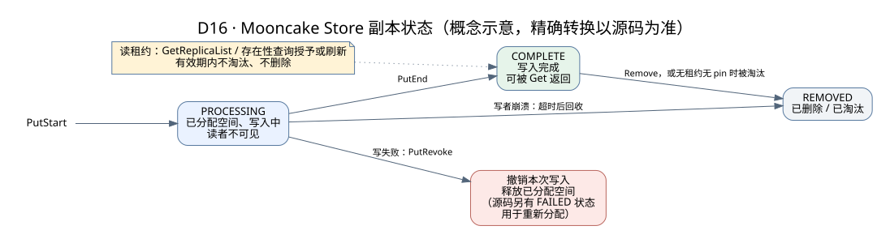

Mooncake：Store 内核与源码路线
本篇定位：只讲 Mooncake 的实现与源码。发布、租约、副本等通用原理已在KV 存储详解讲过，这里重点看 Mooncake 具体怎么做、在哪段代码里。
本章基于总览中的 commit，沿 C++ Store 和经典 TE 阅读。源码仍在演进，函数名比行号更适合作为定位入口。阅读方法是先理解正常路径，再找对应的状态和失败测试。
1. 论文与代码分别学什么
FAST '25 论文解释了 KV-centric 系统为什么要把 prefill、decode、共享缓存和全局调度联动起来。它适合学习问题建模、SLO、过载准入和评估方法。
当前仓库还包含经典 C++ Store、Store-RS、Transfer Engine、TENT、Conductor、EP/PG、P2P Store、Reshard、RL 组件。它们有各自的服务边界和成熟度。不能用一张早期论文图代表今天每一个模块，也不能把论文的性能数字当作当前任意部署的承诺。
主线阅读顺序：
Python/API → Client 对象读写 → Master 元数据
→ 分配/副本/租约/淘汰 → Transfer Engine → 集成 → HA/分层
2. 源码导航表
下列为仓库相对路径。先读头文件和测试，再进入长实现文件；每次围绕一个问题阅读。
| 阅读目的 | 文件或目录 | 查找入口 / 要回答的问题 |
|---|---|---|
| Python 后端选择 | python/mooncake/store/__init__.py |
MOONCAKE_STORE_BACKEND；cpp 与 rs 是否等价？ |
| Python 原生接口 | mooncake-store/include/pyclient.h |
MooncakeDistributedStore、setup、get/put 和 buffer 所有权 |
| 高层客户端 | mooncake-store/src/real_client.cpp |
初始化、挂载资源、buffer、关闭、读写封装 |
| 核心读写 | mooncake-store/src/client_service.cpp |
Client::Put、Client::Get、StartBatchPut、FinalizeBatchPut |
| Master RPC 客户端 | mooncake-store/src/master_client.cpp |
RPC 错误如何变为客户端结果 |
| Master 状态 | mooncake-store/include/master_service.h、src/master_service.cpp |
PutStart、PutEnd、GetReplicaList、分片锁 |
| 副本描述 | mooncake-store/include/replica.h、storage_backend.h |
内存/磁盘/DFS 描述中有哪些地址或位置 |
| 租约 | mooncake-store/include/lease.h |
GrantReadLease、deadline、并发延长与过期判断 |
| 放置与分配 | mooncake-store/src/allocation_strategy.cpp、allocator.cpp |
哪些 segment 可分配、如何处理不足 |
| 回收 | mooncake-store/include/eviction/、src/eviction/ |
资格判断、策略、执行回收是否分层 |
| 传输任务 | mooncake-store/src/transfer_task.cpp |
副本读写如何映射到底层数据移动 |
| TE API | mooncake-transfer-engine/include/transfer_engine.h |
register/open/submit/status/free |
| TE 实现 | mooncake-transfer-engine/src/transfer_engine.cpp、transfer_engine_impl.cpp |
请求进入哪个 transport |
| 元数据与拓扑 | mooncake-transfer-engine/src/transfer_metadata.cpp、topology.cpp |
segment 发现、网卡/内存关联 |
| 协议实现 | mooncake-transfer-engine/src/transport/ |
TCP/RDMA 等如何提交、完成、重试 |
| Store 测试 | mooncake-store/tests/master_service_test.cpp、client_integration_test.cpp |
对象状态、失败语义、集成约束 |
| 内存与分配测试 | allocation_strategy_test.cpp、eviction_strategy_test.cpp、client_buffer_test.cpp |
边界如何被固定下来；路径均在 Store tests 下 |
在仓库根目录可用：
git grep -n 'Client::Put' -- mooncake-store/src
git grep -n 'Client::Get' -- mooncake-store/src
git grep -n 'GetReplicaList' -- mooncake-store/include/master_service.h
git grep -n 'LEASE_EXPIRED' -- mooncake-store/src mooncake-store/tests
git grep -n 'submitTransfer' -- mooncake-transfer-engine
3. Master 管元数据，Client 管数据资源
Master 记录 (tenant, key) 的对象信息、大小、checksum（若启用）、replica descriptors、租约/pin 状态、配额等。payload 由客户端贡献的内存或存储层持有，数据传输绕过 Master。
当前 C++ Master 的元数据以分片哈希表管理，kNumShards=1024。这是单 Master 内部的锁分片，不是说有 1024 台分布式 Master。每个 shard 有锁；批查询会按 shard 归组，降低重复加锁成本。
Master 内存规模大致随“对象数 × 每对象/副本元数据大小”增长。对象过小会增加哈希、锁、RPC、序列化和内存分配压力；即使数据面 RDMA 带宽还有余量，控制面也可能饱和。
不要混淆两种元数据：
- Store 对象元数据：某个 key 在哪里、哪些副本已完成、是否允许回收。
- TE 传输元数据：某个 segment、内存区、地址和 endpoint 如何访问。
HTTP、etcd、P2P handshake 是传输元数据交换的不同路径或机制。Store Master 的 HA 协调与恢复又是另一项部署能力。
一步步看对象的一生：写入、读取、租约与淘汰
下面两张图把后面几节的内容先串起来：静态图是副本的状态变化，动态演示是一个对象从写入到被淘汰的完整过程。默认值来自学习版本的 mooncake-store/include/types.h，部署时可以通过配置修改。

| 参数 | 默认值 | 含义 |
|---|---|---|
读租约 default_kv_lease_ttl | 10 秒 | Get / 存在性查询成功后，这段时间内对象不会被淘汰或删除 |
| soft pin 时长 | 30 分钟 | 从对象变为可读开始计时，期间降低被淘汰的优先级，不保证不淘汰 |
淘汰高水位 eviction_high_watermark_ratio | 0.90 | 存储池用量超过 90% 开始淘汰 |
每次淘汰比例 eviction_ratio | 0.05 | 每次大约腾出 5% 的空间 |
| 未完成写的丢弃超时 | 30 秒 | PutStart 后迟迟没有 PutEnd，超过这个时间同一 key 的新写入可以丢弃它 |
| 未完成写的空间回收超时 | 10 分钟 | 超过这个时间，未完成写占用的空间被回收 |
- 写者先找 Master 申请：这个 key 要多大、要几个副本。
- Master 选好段并分配空间，副本状态是 PROCESSING。此时 Get 查不到可读副本，读者看不到这个对象。
- 写者不经过 Master，直接用 Transfer Engine 把数据写到各个副本所在的段。Master 不转发数据。
- 数据写完，写者调用 PutEnd，副本变成 COMPLETE，对象从这一刻起才对读者可见。如果写者在 PutStart 之后崩溃、没有调用 PutEnd：超过 put_start_discard_timeout（默认 30 秒）后，同一 key 的新写入可以丢弃这次未完成的写；超过 put_start_release_timeout（默认 10 分钟）后，空间被回收。
- 读者查询可读副本，Master 同时给这个对象授予读租约（默认 10 秒）。租约期间，这个对象不会被淘汰或删除。注意：成功的存在性查询也会刷新租约。
- 读者直接从某个副本读数据。读完要检查租约是否仍然有效——如果排队太久、读的时候租约已经过期，空间可能已被回收，这次读到的数据必须丢弃。
- 存储池用量超过高水位（默认 90%）时，Master 开始淘汰。正在写入、有有效租约、被 pin 住的对象都不在候选范围内。
- 每次大约淘汰 5% 的空间，在符合条件的对象里按近似 LRU 挑选。被淘汰的对象之后再查就是 miss，上层回到重算。soft pin 只是降低被淘汰的优先级，并不保证永不淘汰。
三个容易被追问的地方：① 租约只有 10 秒，读一个大对象如果排队太久，读完时租约可能已过期，数据必须丢弃——这就是互动演示：超时与租约模拟的情况；② 高频的存在性查询会刷新租约，可能让本该被淘汰的对象一直留着；③ 淘汰只看“有没有租约、有没有 pin、是否已完成”，不理解前缀关系，所以上层可能出现“前缀中间的 chunk 被淘汰、后面的还在”的情况，命中时要重新折叠可用前缀。
4. 沿 Client::Put 阅读
当前普通写入可归纳为：
- 根据 slices 得到长度；在诊断开关开启时计算对象 checksum。
- 调用
MasterClient::PutStart，传入 key、切片长度和副本配置。 - Master 校验对象/资源/配额并分配位置，返回 descriptors；对象尚未因为分配完成而变成可读。
- Client 对对应后端执行写入。内存副本走 TE；DFS、磁盘等有自己的实现路径。
- 汇总各类副本完成情况，依据当前路径的规则决定
PutEnd、PutRevoke和返回结果。 - Master 发布可读副本状态，后续读者才能使用。
三个面试容易答错的点：
PutStart/PutEnd保证发布顺序，不是多对象事务。- 申请
replica_num=N不应推断一定得到 N 个跨机器副本。普通内存分配存在 best-effort 路径；涉及 DFS 的组合还有更严格规则，应核对实际结果。 - 当前
Client::Put对OBJECT_ALREADY_EXISTS可返回成功而不覆盖。重复put(key, different_bytes)不是可靠更新方式；内容寻址要求同 key 对应同内容。若确需更新，研究upsertAPI、活跃租约和各副本路径，或采用新的版本键。
这也是为什么检查 put 返回 0 还不等于证明“服务器已经把同键旧值替换成我这次的字节”。
写者崩溃怎么办
若写者在 start 后、end/revoke 前退出，会留下未完成对象与已分配空间。Master 的 zombie cleanup 使用 discard/release 等超时来解除阻塞和回收资源。
两个目标要兼顾：不能把未完成数据交给读者，也不能永久占用资源。回收实现还需配合在途传输和 segment 生命周期，不能认为“超时”自动停止所有 DMA。
5. 沿 Client::Get 阅读
先查询副本和读租约，再选择可读副本读取。当前普通单对象路径可见 FindFirstCompleteReplica；不要未经检查就声称每次读取都会做全局最短路径最优选择。
Client::Get 会处理传输结果；若启用了相应 checksum 且对象有元数据，还会做完整性检查；读取结束后检查租约有效性。任一失败都不能作为成功数据交给上层。
为什么网络 I/O 成功还不够？
- 读取时间越过租约窗口，地址背后的资源可能已进入回收/复用流程。
- 对象校验失败，收到的字节不满足完整性约束。
- 上层还需要完成 shape/dtype/layout 和模型版本等语义检查；Store 不知道 attention 的语义。
get_into 直接写调用者提供的内存，失败时目标 buffer 可能已部分或全部改变。不能因为“buffer 里有数据”就启动 GPU 消费。
6. Lease、TTL、soft pin、hard pin
| 机制 | 解决什么问题 | 不能推导出什么 |
|---|---|---|
| 读 lease | 为正常读提供防删除/淘汰时间窗口 | 对象永不丢失、节点不会崩溃 |
| 业务 TTL | 应用希望何时不再复用对象 | 与读租约 TTL 完全相同 |
| soft pin | 在一定生命周期内优先保留对象 | 永不被淘汰、读取会无限续期 |
| hard pin | 对象不进入普通淘汰候选 | 数据持久化、节点故障后仍存在 |
| buffer 注册 | 让传输引擎/NIC 能访问一块内存 | 自动管理 Python/C++ 所有者生命周期 |
当前文档规定，成功的 ExistKey/GetReplicaList 可授予或刷新读租约；因此高频存在性检查也可能改变回收行为。不要把它当完全无副作用的观测。
Lease::GrantReadLease 使用原子操作把 deadline 单调向后推进，避免并发续期把更晚的保护时间缩短。客户端还需保守地处理本地截止时间和 RPC 耗时。生产部署应理解时钟及超时假设。
当前 soft pin 从首个副本变为可读时开始计时，读取只增加普通读 lease，不续 soft pin。soft_pin_action 可显式 preserve/enable/disable；是否允许内存不足时淘汰 soft-pinned 对象由配置控制。soft pin 是运行时优先级状态，恢复/晋升后不应假设仍保留。
hard pin 的创建与移除受 API 规则限制，容易吃掉大量不可回收空间，需要配额和预算。
7. 放置、复制与内存分配
当前文档描述的策略包括：
random：优先尝试指定 segment，再有限扫描其他候选；同一 slice 的副本避免放在同一个 segment。free_ratio_first：从候选中偏好空闲比例较高的 segment，在开销和均衡之间取舍。local_first：根据 host identity 优先本机资源；当前内存路径和副本数存在限制。- SSD/CXL 等专用策略：需按支持条件使用。
segment 不等于物理故障域。同一主机可以挂多个 segment；两个不同 segment 仍可能一起随主机退出。若设计要求跨 host/rack 冗余，必须显式验证放置策略与部署约束。
内存相关要分别计算：
贡献的 global segment
+ Client 本地传输/staging buffer
+ 上层 LMCache/HiCache 主机缓存
+ 元数据与分配器开销
+ 在途、对齐、碎片和运行时预留
local_buffer_size 不等于向整个 Store 贡献的共享容量。多层各配“32 GiB”可能在一台主机上叠加成远超 32 GiB 的实际驻留内存。
8. 淘汰与分层存储
回收应先判断“是否允许”，再决定“删哪个”：在途写、有效租约、pin、组关系和后端状态可能影响资格。当前文档把内存策略描述为近似 LRU；具体索引和执行拆分看 eviction/。
分层存储要关注提交与可见性边界：
- DRAM 适合热点、低延迟与高带宽。
- LOCAL_DISK 由对应客户端管理，并可通过异步 offload 形成冷层。
- DFS、NVMe-oF、对象存储等各有不同地址描述、恢复和 I/O 路径。
- 某个写操作成功的含义要看其后端：内存成功、文件写完成、
fsync、跨节点复制是不同保证。
有 SSD 文件不代表服务重启后必能重建所有 key 与可读位置。恢复还依赖元数据、客户端资源重新注册和后端一致性。
9. Transfer Engine：把对象访问落成字节移动
Store 负责 key 语义，TE 面向地址、长度、segment 和操作，不知道 token、模型或前缀是什么。
注册、批量传输、RDMA、NUMA 和零拷贝的详细解释已归入Transfer Engine 实现专题。阅读 Store 时重点关注：如何保护源/目标空间，如何处理传输完成或失败，以及何时发布对象和回收资源。
10. 错误处理与 HA
| 故障 | 正确行为目标 | 排查重点 |
|---|---|---|
| key miss / 副本不可用 | 有界重试或重算 | 是否被淘汰、贡献者是否存活、索引是否过期 |
| 无可分配空间 | 触发符合规则的回收或拒绝写入 | lease/pin 占比、碎片、配额、segment 分布 |
| 网络传输失败 | 安全结束在途操作；根据支持路径重试/换副本 | NIC/QP、目标存活、descriptor、超时 |
| 租约过期 | 失败返回，不能消费目标数据 | 大对象、排队、慢网、TTL 和重试预算 |
| Master 故障 | 按已配置 HA 恢复/切换 | 选主、旧主隔离、快照/OpLog、客户端重连 |
| 全部数据副本丢失 | 报告未命中/不可用，回到计算 | HA 元数据不能凭空恢复丢失的 DRAM |
| checksum mismatch | 拒绝本次读取，定位写/读/生命周期问题 | 不能直接拿错误 buffer 继续推理 |
当前 C++ Store 的 HA 有协调、快照、OpLog、Standby bootstrap 等机制，详见 部署与 HA。学习时分别问：谁是 leader，如何避免旧 leader 持续服务，状态怎么恢复，payload 是否仍存在，恢复后哪些对象必须重新验证？
对象 checksum 诊断开关 MOONCAKE_STORE_CHECKSUM=1 要在 writer/reader 创建前统一设置。它针对有校验元数据的适用完整对象读；范围读取、历史未带元数据对象不能一概视为已校验。它会增加扫描/搬运开销，不用于伪装成无成本的生产性能基线。
11. 当前扩展组件应掌握到什么程度
| 组件 | 知道的重点 | 推荐入口 |
|---|---|---|
| TENT | 下一代传输运行时，动态选路、分片调度、部分失败处理；不要把能力无条件套到经典 TE | TENT |
| Store-RS | Rust 原生 Store，有独立架构、运行与迁移边界；同名 Python API 不保证内部路径相同 | Store-RS 设计 |
| Conductor | 消费缓存事件并维护全局前缀位置索引，供路由查询；不是 payload 存储 | Conductor |
| P2P Store | 探索不同对象发现/管理路径，不能等同 TE P2P handshake | P2P Store |
| EP / PG | MoE dispatch/combine、集体通信与故障感知，区别于 attention KV | EP、PG |
| Reshard / RL | 权重重分片、结构化张量与 rollout 数据流 | Reshard |
本章阅读产物
完成一份“函数—状态—所有者—错误”的表。例如：PutStart 创建哪些元数据、谁拥有分配空间；TE batch 谁释放；读租约从哪里来；get_into 失败后谁阻止 GPU 继续消费。能回答这些问题，才算读懂数据路径。